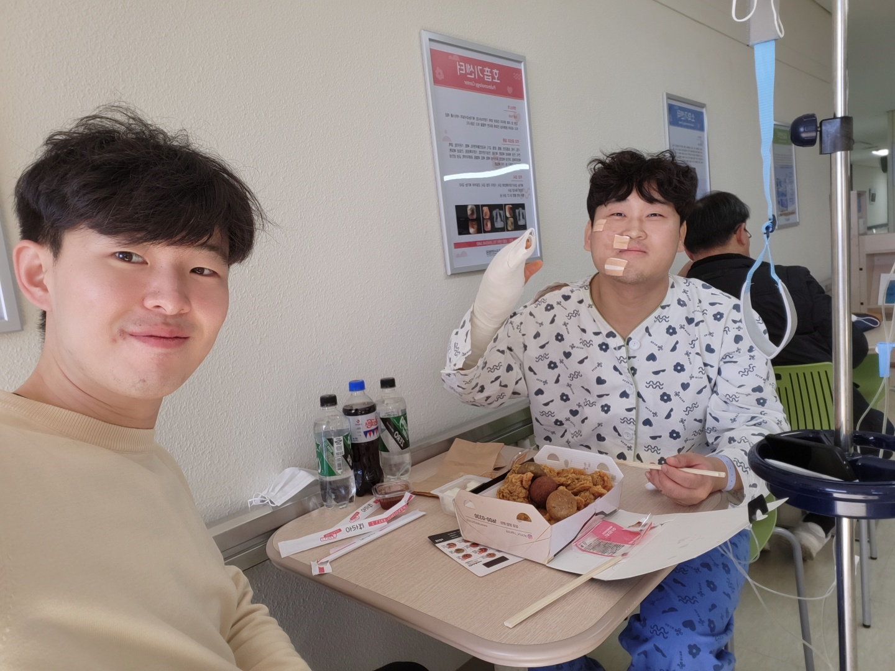

근황
안녕하세요.
기도편지로는 처음 인사를 드립니다. 기도 카드를 직접 드리며 나눔 하지 못한 것이 아쉬울 따름입니다 ㅠㅠ
저는 올해 한동대학교를 졸업하고 7개월 정도 AI관련 회사에서 직장생활을 하고 11월 달에 퇴사를 하였습니다. 현재는 2024년 봄학기 AI대학원 입학예정 중에 있는 백수입니다 ㅎㅎ
한달전에는 자전거타다 넘어져서 왼손 등뼈가 골절되어 수술 후 회복 중에 있습니다. 다행히 수술은 잘 되었다고 합니다.

<근황 사진>
9월부터 비전 선교단이라는 선교단체에서 선교 훈련을 시작하였고 이번 달에 하나님의 은혜로 무사히 훈련 수료를 하게 되었습니다.
훈련 과정에서는 내 힘으로 하나님의 일을 하려 노력했던 마음을 내려놓고 은혜로 값없이 하나님의 아들 됨을 누리고 하나님의 사랑을 온전히 느끼라는 마음을 주셨습니다.
불안전한 세상 소망이 아닌 유일하게 온전한 하나님의 소망을 붙들고 은혜로 살아갈 수 있도록 함께 기도 부탁드립니다.
 <선교 훈련 졸업식>
<선교 훈련 졸업식>